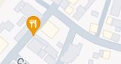

Trifecta Culinary - Downtown Delight
Ubicado en el corazón de la ciudad, Trifecta Culinary Downtown Delight ofrece una experiencia gastronómica inolvidable con un menú que fusiona cocina contemporánea y sabores locales. Disfruta de un ambiente elegante y moderno, ideal para cenas románticas o reuniones de negocios.
123 Central Avenue, Suite 456, Downtown City, DC 12345
Trifecta Culinary - Riverside Retreat
Situado junto al pintoresco río, Trifecta Culinary Riverside Retreat te invita a deleitarte con platos exquisitos mientras disfrutas de una vista impresionante del agua. Con una decoración inspirada en la naturaleza, este restaurante es perfecto para una escapada tranquila de la rutina diaria.
789 Riverside Drive, Floor 2, River City, RC 67890
Trifecta Culinary - Mountain View
Enclavado en las montañas, Trifecta Culinary Mountain View ofrece una experiencia culinaria que combina lo mejor de la cocina gourmet con ingredientes frescos y locales. Ven y disfruta de una comida excepcional mientras contemplas las majestuosas vistas de las montañas.
456 Summit Street, Cabin 101, Mountain Town, MT 34567
Trifecta Culinary - Seaside Escape
Trifecta Culinary Seaside Escape es el lugar ideal para los amantes del mar. Ubicado a pocos pasos de la playa, este restaurante ofrece un menú especializado en mariscos frescos y platos mediterráneos, todo en un ambiente relajado y playero.
321 Ocean Boulevard, Bungalow 5, Seaside City, SC 98765